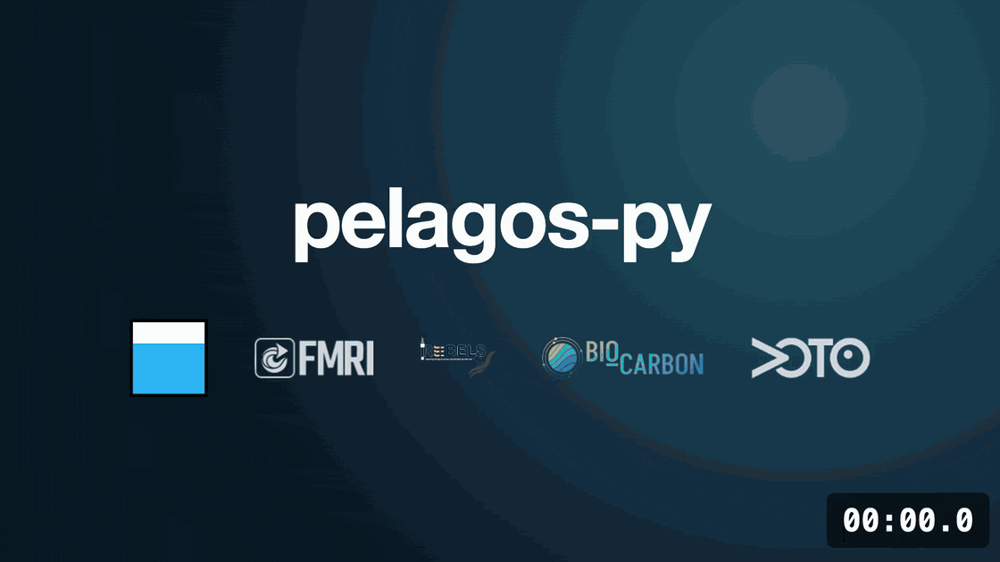

pelagos-py documentation#
- Version:
0.0.21
pelagos-py, from the NOC (National Oceanography Centre) Autonomy group, is a modular processing pipeline for raw OG1-format glider and ALR data that outputs science-ready datasets. You control it through a single YAML config file, so a processing method can be shared and reproduced by sharing the raw data and the config.
It covers a broad and growing range of oceanographic variables. Suggestions are always welcome, and adding your own steps is kept as simple as possible: see Development.
The tool is written in Python, but using it needs little Python. In most cases processing takes a few lines:
from pelagos_py import Pipeline
# Create the pipeline using the specified config
Pipeline.load_config("config.yaml").run()
# Or build a config for an OG1 file from the default template, then run it
Pipeline.make_config("glider.nc").run()
The main work is writing your config.yaml, which sets how the raw data is processed. make_config builds one for your
file to start from, and examples/configs/all_step_configs.yaml documents every step’s options. If anything doesn’t make
sense, let us know so we can improve it.

